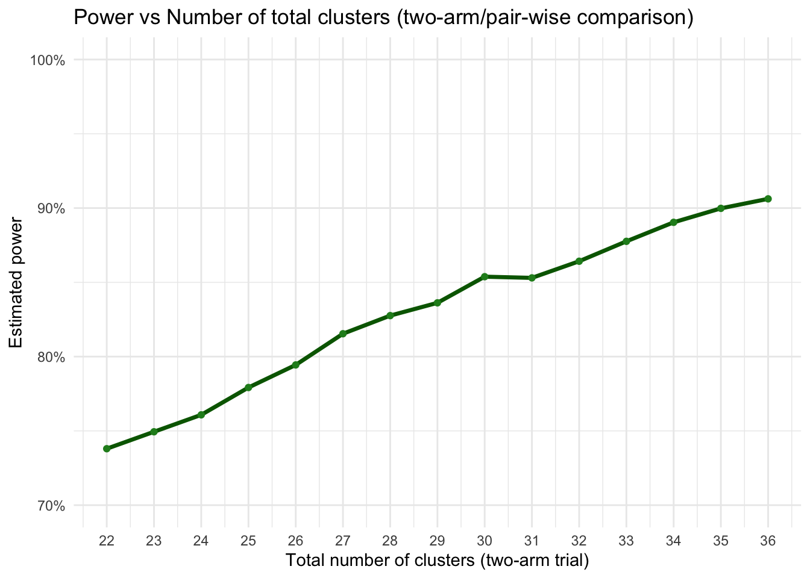
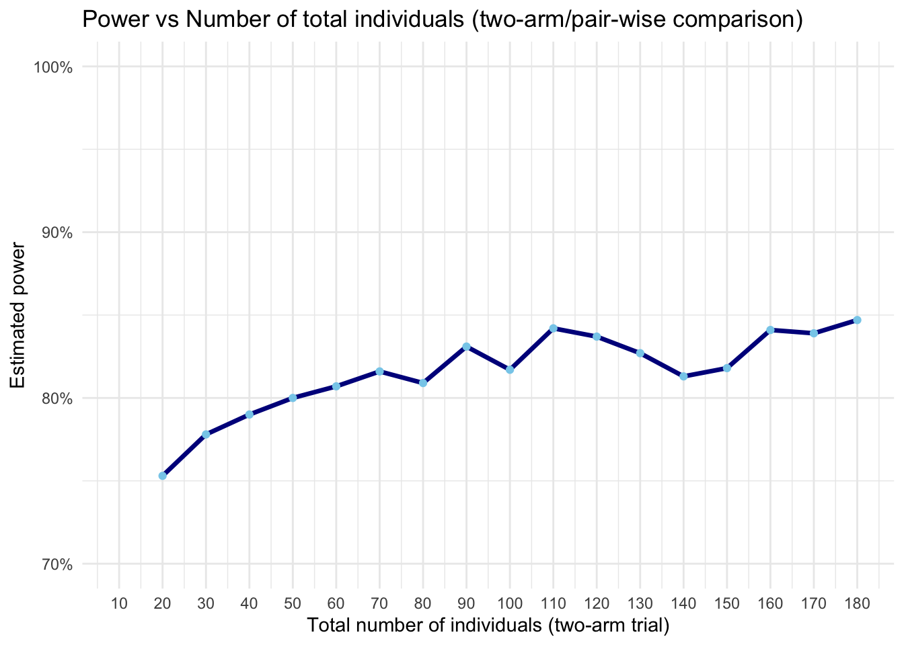
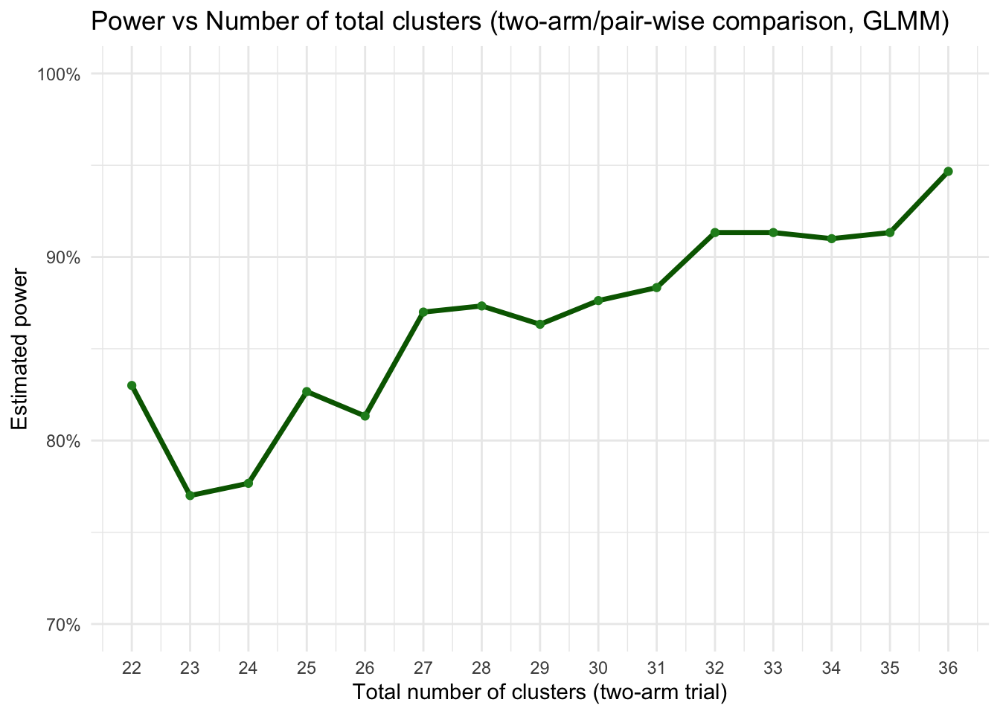

Interventions on the level of health care workers at health facilities (dispensaries) in Zanzibar to reduce antibiotic prescriptions. Multi-arm with 2 interventions:
Eligible participants: Patients attending the dispensary with acute infectious illness
Power it for subgroup of kids under 5 years (special subgroup of interest), ca. 33% of all attending patients with acute infectious illness
Cluster size of eligible overall participants: 80-500 per cluster per month
Cluster size of eligible kids under 5 years (special subgroup of interest): 26-165 per cluster per month
Max. 39 clusters, i.e. max. 13 clusters per arm, due to feasibility/budget
Binary outcome: Proportion of patients prescribed an antibiotic at first presentation
Baseline prescription rate (control clusters): 75%, based on existing data
Expected delta Control to Intervention 1: 25 percentage points, based on prior evidence
Expected delta Control to Intervention 2: 30 percentage points
Intervention 1 vs Intervention 2 is not of primary interest
Min. desired power 80%
ICC for AB prescription: 0.20, based on prior evidence in same setting (but mainland TZ)
We expect the intervention effect to manifest 3-4 months after baseline
Important feasibility aspect: The primary outcome is collected through routine data, while the key secondary outcomes are collected via phone calls
CV (coefficient of variation), ratio of standard deviation of cluster sizes to mean of cluster sizes
Since we have flexibility in individual sample size per cluster and need to restrict it anyway to keep the data collection for the key secondary outcomes feasible, we decided to take a random sample from each cluster, same n, which will reduce the CV. Moreover, we will stratify the randomization and adjust the outcome model for actual cluster size (attendance rate)
An individual sample size per cluster (i.e. mean cluster size) of n=150 will be feasible to recruit during 2 months (month 4 and 5 after baseline, when effect of intervention kicks in) from each cluster, using a random sampling strategy. N=150/cluster means we will get n=40/cluster kids under 5, for which we power the sample size. And we can safely assume a minimal CV of 0.1
Recruitment bias? -> see protocol how to mitigate
Multiplicity? -> see separate discussion. Decision: No adjustment for multiplicity
Packages
Code
req_pkgs <-c("pwr","dplyr","purrr","ggplot2","lme4","geepack", # for GEE (if needed)"MASS", # for GLMM PQL"marginaleffects", # for marginal standardization"future","future.apply","nlme","tibble","knitr","kableExtra","splines")install_if_missing <-function(pkgs){for(p in pkgs){if(!requireNamespace(p, quietly=TRUE)){install.packages(p, repos="https://cloud.r-project.org") }library(p, character.only=TRUE) }}install_if_missing(req_pkgs)# set global RNG seed for reproducibilityset.seed(20250809)
Corresponding individual randomized trial
Sample size for the individual randomized trial on the same question
Code
# Parametersp_C <-0.75# Baseline prescription rate (control group)p_I1 <-0.50# int 1: 25pp reductionp_I2 <-0.45# int 2: 30pp reductionpower <-0.80# desired poweralpha <-0.05# do not apply any (bonferroni) correction for multiplicity (see separate discussion)# Effect sizes, standardized as Cohen's hh_I1_C <-ES.h(p1 = p_I1, p2 = p_C)h_I2_C <-ES.h(p1 = p_I2, p2 = p_C)cat("Cohen's h for I1 vs Control:", round(h_I1_C, 3), "\n")
Cohen's h for I1 vs Control: -0.524
Code
cat("Cohen's h for I2 vs Control:", round(h_I2_C, 3), "\n")
Cohen's h for I2 vs Control: -0.624
Code
# => reduction of mind. 25% is a Cohen's h of over 0.5 -> medium to large effect according to Cohen# Sample size first pair-wise comparison (I1 vs C)ss_I1_C <-pwr.2p.test(h = h_I1_C, sig.level = alpha, power = power)cat("Sample size per arm (I1 vs C):", ceiling(ss_I1_C$n), "\n")
Sample size per arm (I1 vs C): 58
Code
# Sample size second pair-wise comparison (I2 vs C)ss_I2_C <-pwr.2p.test(h = h_I2_C, sig.level = alpha, power = power)cat("Sample size per arm (I2 vs C):", ceiling(ss_I2_C$n), "\n")
Sample size per arm (I2 vs C): 41
Code
# Use max of the twon_per_arm <-max(ceiling(ss_I1_C$n), ceiling(ss_I2_C$n))n_total <- n_per_arm *3cat("Sample size per arm:", n_per_arm, "\n")
Sample size per arm: 58
Code
cat("Total sample size (3-arm trial):", n_total)
Total sample size (3-arm trial): 174
A reduction of at least 25% percentage points (the smaller delta of the two) represents a Cohen’s h of >0.5 => medium to large effect
(1) Sample size calculation CRT: formula-based
Add the design effect (DEFF) to the individual RCT sample size. The usual standard DEFF formula:
Note: We simulate a two-arm trial setup (not three-arm), since power/sample size is based on the main pair-wise comparison (control vs int 1) => Max. 26 clusters!
Data-generating model (per cluster):
For arm i (0=control, 1=intervention) and cluster j: Y_ij ∼ Binomial(m_ij, p_ij), logit(p_ij) = β0 + β1_i + u_j , where u_j is a cluster random effect with mean 0 and variance σ^2_b
Binomial(m_ij, p_ij): Conditional on p_ij, we assume each of the m_ij individuals in that cluster are independent Bernoulli trials with probability p_ij. So Y_ij is a binomial draw with that probability, for the cluster-level.
A Bernoulli trial is a random event with two outcomes (success/failure), with the same, independent, probability of success every time.
Independence assumption (within-cluster): Whether one person gets the prescription doesn’t change the probability for another person in the same cluster (once p_ij is fixed). The correlation between people’s outcomes in the same cluster comes entirely from them sharing the same p_ij.
=> Y_ij can be any integer from 0 to m_ij. E.g. if m_ij =42 and p_ij =0.50, then Y_ij is the total number of prescriptions in that cluster, drawn from a binomial distribution with 42 trials and 50% success probability.
logit(p_ij) = β0 + β1_i + u_j:
Using the logit link maps probability p ∈ (0,1) to the whole real line, so we can model it as a linear predictor.
β0 is the baseline log-odds (the logit of the control probability for a typical cluster, i.e. when u_j = 0), representing the the marginal cluster-specific probability.
β1_i encodes the treatment effect and is a log-odds difference; exp(β1) is the conditional odds ratio comparing treatment vs control for the same cluster (holding u_j fixed).
u_j is the cluster random intercept (a cluster-level shift on the log-odds scale). It captures unobserved cluster-level factors (e.g. prescriber tendency) that move all individuals in the cluster up/down in log-odds. Typically, u_j has mean 0 and variance σ^2_b and is independent across clusters (see above). The random intercept does not change the conditional treatment effect, it only shifts the baseline log-odds for that whole cluster. In other words, the difference in log-odds between arms for the same cluster is always constant, but the actual probabilities shift up/down with u_j. For clusters with positive u_j both arms have higher probabilities; for negative u_j both are lower.
ICC on log-odds scale:
ICC = p = rho = σ^2_b / (σ^2_b+(π^2/3))
The ICC consists of individual-level variance (noise) and between-cluster variance (noise), in the sense of: between-cluster variance / total variance. The between-cluster variance approximates the cluster random effect variance (σ^2_b)
In logistic models, the individual level variation is usually fixed at π^2/3 (3.29)
So, focusing on the cluster random effect variance (σ^2_b), we can derive it from the formula above as: σ_b = sigma_b = sqrt((ICC(π^2/3))/(1−ICC))
(If there’s additional within-site variation over time, i.e. baseline period or SW-CRT, we include σ^2_b_p, typically as a fraction of σ^2_b, e.g., half the site-level variance).
Cluster effect distributions:
While ICC is the proportion of the total variance (in the latent scale) that comes from between-cluster differences (“what fraction of the total variability is due to between-cluster differences”), the σ^2_b is an absolute variance (“How big the cluster intercept spread is in log-odds units” or “how much variation there is in prescription tendency across clusters”) and can have different shapes.
GLMM assumes normal distribution, but reality is often skewed - esp. with few clusters! Simulate three scenarios including a realistic/skewed/conservative scenario and see if GLMM breaks (as in paper above):
b) Gamma (skewed): generate a_j ∼ Gamma(shape=2,scale=1), then set u_j = σ_b((a_j−2)/sqrt(2))
A shape parameter of 2 give a distribution with skew 1.4 and kurtosis 3, i.e., positive skew (some clusters much higher tendency than average)
c) Uniform: u_j ∼ Uniform(−sqrt(3)σ_b, sqrt(3)σ_b)
Skewness = 0 (perfectly symmetric), Kurtosis = −6/5 (lighter tails than normal), no extreme values, overall flat, all clusters are evenly spread; to test if GLMMs are sensitive to lack of tail weight, i.e., whether they rely on the normal distribution’s tails to stabilize estimates.
Cluster sizes m_ij:
Allow for varying cluster size, i.e. varying coefficient of variation (CV) of cluster sizes, using same approach as they did: They sampled cluster sizes so that m_ij = 2 + δ_ij, drawn from a Negative Binomial:
δ_ij ∼ NegBin(size = (m-2)^2/(s^2-(m-2)), p = m-2/s^2)
where s is the SD of cluster sizes (CV = s/m).
This yields a minimum cluster size of 3. (note: they wrote no.offails and prob.offail; but the above should represent the same).
δ is in a way the random component added to 2 to get the cluster size (of min 3).
(2.2) Create main functions and simulate one dataset
Code
# 1) compute sigma_b from ICC (on latent logit scale):icc_to_sigma <-function(rho){if(rho<=0) return(0) sigma_b <-sqrt( (rho * (pi^2/3)) / (1- rho) )return(sigma_b)}# 2) compute beta0 for given control prevalence p0p_to_beta0 <-function(p0){qlogis(p0)}# 3) given p0 and p1, compute OR on the cluster-specific log-odds scalep0_p1_to_OR <-function(p0, p1){ odds0 <- p0 / (1- p0) odds1 <- p1 / (1- p1) odds1 / odds0}# 4) generate random cluster-level u_j for the three distributionsgenerate_u <-function(n_clusters, sigma_b, dist =c("normal","gamma","uniform")){ dist <-match.arg(dist)if(sigma_b ==0) return(rep(0, n_clusters))if(dist =="normal"){return(rnorm(n_clusters, mean=0, sd = sigma_b)) } elseif(dist =="gamma"){# they used Gamma(shape=2, scale=1) then standardized to mean 0 and sd sigma_b a <-rgamma(n_clusters, shape=2, scale=1)# a has mean 2, var 2. Standardize: (a - 2)/sqrt(2) then scale to sigma_breturn(sigma_b * (a -2)/sqrt(2)) } elseif(dist =="uniform"){ cut <-sqrt(3) * sigma_breturn(runif(n_clusters, min =-cut, max = cut)) }}# 5) generate cluster sizes with target mean m and CV. Implementation follows their negative-binomial based approach and enforces minimum cluster size of 3.generate_cluster_sizes <-function(n_clusters, m, CV){if(CV ==0){return(rep(m, n_clusters)) } s <- CV * m# We want delta = m_j - 2 to follow NegBin with mean (m-2) and variance s^2 mu_delta <- m -2 var_delta <- s^2if(var_delta <= mu_delta){# Negative Binomial requires variance > mean. So, this is an impossible NB parameterization# If so, fall back to a discrete uniform around m low <-max(3, floor(m - s*1.5)) high <-ceiling(m + s*1.5) out <-pmax(3, round(runif(n_clusters, low, high)))return(out) } size_nb <- (mu_delta^2) / (var_delta - mu_delta) # see formula above prob_nb <- mu_delta / var_delta # see formula above# rnbinom in R uses size, prob; mean = size*(1-prob)/prob, but with this param it matches delta <-rnbinom(n_clusters, size = size_nb, prob = prob_nb) m_j <-2+ delta m_j[m_j <3] <-3# enforce min 3 (generating 2+delta ensures >=2, we bump to 3)return(m_j)}# Parameters for single simulated datasetn_clusters <-26m_mean <-40CV <-0.1p0 <-0.75p1 <-0.50OR <-p0_p1_to_OR(p0, p1) # compute OR from p0 and p1rho <-0.20# ICCre_dist <-"uniform"# Simulateset.seed(20250809)sigma_b <-icc_to_sigma(rho)u_j <-generate_u(n_clusters, sigma_b, dist = re_dist)sizes <-generate_cluster_sizes(n_clusters, m_mean, CV)arm_assign <-sample(rep(0:1, length.out = n_clusters))beta0 <-p_to_beta0(p0)beta1 <-log(OR)y <-integer(n_clusters)for(j inseq_len(n_clusters)){ # iterate over each cluster# create the linear predictor (NOTE: beta1 turns 0 if arm0, and 1 * beta1 if arm1) linpred <- beta0 + beta1 * arm_assign[j] + u_j[j] # apply the inverse logit (logistic function) to convert log-odds to probability p_j <-plogis(linpred) # Simulate the number of successes in cluster j y[j] <-rbinom(1, size = sizes[j], prob = p_j) }df_sim <-data.frame(cluster =seq_len(n_clusters),arm = arm_assign,size = sizes,y = y)df_sim
mean_sizes <- df_sim %>%group_by(arm) %>%summarise(mean_size =mean(size))ggplot(df_sim, aes(x =factor(cluster), y = size, fill =factor(arm))) +geom_bar(stat ="identity", color ="black") +geom_hline(data = mean_sizes, aes(yintercept = mean_size, color =factor(arm)),linetype ="dashed", size =1, show.legend =FALSE) +geom_text(data = mean_sizes, aes(x =Inf, y = mean_size, label =paste0("Mean = ", round(mean_size, 1))),hjust =1.1, vjust =-0.5, color =c("skyblue4", "tomato3"), size =4) +scale_fill_manual(values =c("skyblue", "tomato"), labels =c("Control (arm=0)", "Intervention (arm=1)")) +scale_color_manual(values =c("skyblue4", "tomato3")) +labs(x ="Cluster", y ="Cluster Size", fill ="Treatment Group") +theme_minimal() +ggtitle("Cluster size per cluster") +theme(axis.text.x =element_text(angle =45, hjust =1))
size = number of individuals in a cluster
y = number of individual-level successes (binary=1) observed in the cluster, i.e., represents the number of individuals in that cluster who received an AB prescription.
(2.3) Simulate power, using cluster-level analysis approach
NOTES:
Use cluster-level analysis (unweighted t-test on log-odds, with 0.5 continuity correction, as per guidance according to Thompson & Leyrat & al -> “clan” command)
p0_vals <-seq(0.50, 0.85, by =0.05)p1_vals <-seq(0.30, 0.70, by =0.05)grid <-expand.grid(p0 = p0_vals, p1 = p1_vals)results <- grid %>%rowwise() %>%mutate(power =simulate_power(n_clusters =26,m_mean =40,CV =0.1,p0 = p0,p1 = p1,rho =0.2,re_dist ="gamma",n_sim =1000)) %>%ungroup()# Plotggplot(results, aes(x = p1, y = power, color =factor(p0))) +# Shaded region above 80% powergeom_rect(aes(xmin =-Inf, xmax =Inf, ymin =0.8, ymax =Inf),fill ="lightgrey", alpha =0.3, inherit.aes =FALSE) +# Power curvesgeom_line(size =1.2) +geom_point() +# Labels and scaleslabs(title ="Power Curves by p0 and p1 (two-arm/pair-wise comparison)",x ="Intervention Group Probability (p1)",y ="Estimated Power",color ="Control Group (p0)") +scale_y_continuous(breaks =seq(0, 1, by =0.1),limits =c(0, 1),labels = scales::percent_format(accuracy =1)) +theme_minimal(base_size =14)
(2.3.4) Vary ICC
Code
# Vector of ICC values to testicc_values <-seq(0.05, 0.25, by =0.02)# Run power simulations for each ICCpower_results <-sapply(icc_values, function(rho) {simulate_power(n_clusters =26,m_mean =40,CV =0.1,p0 =0.75,p1 =0.50,rho = rho,re_dist ="gamma",n_sim =1000,alpha =0.05,seed =20250809)})# Create data frame for plottingdf_power_icc <-data.frame(ICC = icc_values, Power = power_results)# Plotggplot(df_power_icc, aes(x = ICC, y = Power)) +geom_line(color ="darkred", size =1.2) +geom_point(color ="firebrick") +labs(title ="Power Curve by ICC (two-arm/pair-wise comparison)",x ="Intraclass Correlation (ICC)",y ="Estimated Power") +scale_y_continuous(breaks =seq(0.70, 1, by =0.1),limits =c(0.70, 1),labels = scales::percent_format(accuracy =1)) +theme_minimal()
(2.3.5) Vary number of clusters
Code
# Vector of cluster counts to testn_clusters_vec <-seq(22, 36, by =1)# Run power simulations for each cluster countpower_results <-sapply(n_clusters_vec, function(nc) {simulate_power(n_clusters = nc,m_mean =40,CV =0.1,p0 =0.75,p1 =0.50,rho =0.20,re_dist ="gamma",n_sim =5000,alpha =0.05,seed =20250809)})# Create data frame for plottingdf_power_css <-data.frame(Cluster_ss = n_clusters_vec, Power = power_results)# Plotggplot(df_power_css, aes(x = Cluster_ss, y = Power)) +geom_line(color ="darkgreen", size =1.2) +geom_point(color ="forestgreen") +labs(title ="Power vs Number of total clusters (two-arm/pair-wise comparison)",x ="Total number of clusters (two-arm trial)",y ="Estimated power") +scale_y_continuous(breaks =seq(0.70, 1, by =0.1),limits =c(0.70, 1),labels = scales::percent_format(accuracy =1)) +scale_x_continuous(breaks =seq(22, 36, by =1)) +theme_minimal()

(2.3.6) Vary number of individuals per cluster (mean cluster size)
Code
m_mean_vec <-seq(10, 180, by =10)# Run power simulations for each cluster countpower_results <-sapply(m_mean_vec, function(n) {simulate_power(n_clusters =26,m_mean = n,CV =0.1,p0 =0.75,p1 =0.50,rho =0.20,re_dist ="gamma",n_sim =1000,alpha =0.05,seed =20250809)})# Create data frame for plottingdf_power_iss <-data.frame(Individual_ss = m_mean_vec, Power = power_results)# Plotggplot(df_power_iss, aes(x = Individual_ss, y = Power)) +geom_line(color ="darkblue", size =1.2) +geom_point(color ="skyblue") +labs(title ="Power vs Number of total individuals (two-arm/pair-wise comparison)",x ="Total number of individuals (two-arm trial)",y ="Estimated power") +scale_y_continuous(breaks =seq(0.70, 1, by =0.1),limits =c(0.70, 1),labels = scales::percent_format(accuracy =1)) +scale_x_continuous(breaks =seq(10, 180, by =10)) +theme_minimal()

(2.4) Simulate power, using GLMM analysis approach
NOTES:
As per guidance according to Thompson & Leyrat & al: GLMM with restricted pseudo-likelihood and reduced degree of freedom (minus all covariates in the model)
n_clusters_vec <-seq(22, 36, by =1)power_results_glmm <-sapply(n_clusters_vec, function(nc) {simulate_power_glmmPQL(n_clusters = nc,m_mean =40,CV =0.1,p0 =0.75,p1 =0.50,rho =0.20,re_dist ="gamma",n_sim =300, # reduced for speedalpha =0.05,seed =20250809)})df_power_css_glmm <-data.frame(Cluster_ss = n_clusters_vec, Power = power_results_glmm)ggplot(df_power_css_glmm, aes(x = Cluster_ss, y = Power)) +geom_line(color ="darkgreen", size =1.2) +geom_point(color ="forestgreen") +labs(title ="Power vs Number of total clusters (two-arm/pair-wise comparison, GLMM)",x ="Total number of clusters (two-arm trial)",y ="Estimated power") +scale_y_continuous(breaks =seq(0.70, 1, by =0.1),limits =c(0.70, 1),labels = scales::percent_format(accuracy =1)) +scale_x_continuous(breaks =seq(22, 36, by =1)) +theme_minimal()

(3) Simulate the full dataset and implement the main analysis strategy
The main analysis strategy as per SAP:
Due to the relatively low number of clusters in each pair-wise comparison (n=<30), we use a generalized linear mixed model (GLMM) with restricted pseudo-likelihood estimation and small-sample correction for degrees of freedom (clusters minus cluster-level parameters), as suggested by Thompson and colleagues(ref)
We will adjust the model for these a priori defined covariates (as fixed effects):
Individual-level covariates: Self-reported sex (as binary covariate: male, female) and age (as continuous covariates assuming non-linear association modelled using restricted cubic splines with 3 knots at 10th, 50th and 90th percentiles of the observed age distribution
We will report the resulting treatment-effect (beta-1), which is the log-odds difference between intervention and control or – when exponentiated – the adjusted odds ratio, with its 95% confidence interval. This represents a relative cluster-specific effect, conditional on all included covariates. In addition, we will use marginal standardization and report the resulting population-average marginal relative risk and risk difference with their 95% confidence intervals
Notes on simulating a realistic dataset:
Reuse the helper functions from chapter 2.2, incl. conservative gamma distribution for u_j
Causal structure:
Cluster latent effect (u_j) influences both, baseline AB prescription rate (through alpha, the correlation strength between baseline and u_j) and attendance rate (through att_corr_target) and directly affects the outcome via the cluster random effect
Baseline AB prescription rate directly affects the outcome (via beta_baseline), representing residual correlation beyond the shared cluster effect alpha
Attendance rate directly affects the outcome (via beta_att), representing residual correlation beyond the shared cluster effect att_corr_target
=> baseline_rate and attendance both directly push the outcome (via beta_baseline and beta_att) and share correlation with u_j (i.e., indirectly push the outcome)
=> all of the above in the sense of: “Larger clusters (=higher attendance rate) -> higher AB prescription rate at endline” and “Clusters with higher AB prescription rate at baseline -> higher prescription rate at endline”
Treatment (arm 1) directly affects the outcome (through beta_1), but correlation above and noise below masking it
Add some baseline noise (e.g. tau = 0.45) ensuring that even clusters with the same u_j will show some variability in their observed baseline_rate
alpha (correlation baseline_rate with u_j): e.g. a value of 0.3 means 30% of the variation in the baseline logit is driven by u_j (i.e. drives true cluster tendency or the “cluster-to-cluster variation” at baseline, which also has an impact on the outcome), while the remaining comes from independent measurement noise.
Produce an individual-level dataset, not cluster-level only - as the real-life dataset will look like and in case we also want to add individual-level correlations
(3.1) Simulate one dataset and check some diagnostics
Code
## We use the helper functions from chapter 2.2# icc_to_sigma# generate_u# generate_cluster_sizes# p_to_beta0# p0_p1_to_OR## General parametersset.seed(20250809)n_clusters <-26m_mean <-40CV <-0.1p0 <-0.75p1 <-0.50OR <-p0_p1_to_OR(p0, p1)rho <-0.20# ICC (on latent logit scale)re_dist <-"gamma"# distribution for u_j, keep it conservative# Individual-level covariatesage_mean <-35age_sd <-12sex_prob <-0.48## Generate cluster structuresizes <-generate_cluster_sizes(n_clusters, m_mean, CV)sigma_b <-icc_to_sigma(rho)u_j <-generate_u(n_clusters, sigma_b, dist = re_dist)arm_assign <-sample(rep(0:1, length.out = n_clusters))# First important thing to mimic: AB prescription rate at baseline# alpha controls how much the baseline rate depends on the same latent cluster effect# The bigger alpha, the more high-baseline clusters will also tend to have high endline outcomes indirectly, because u_j is reused in the outcome model => indirect correlation# Baseline AB prescription rate is explained by u_j + random noise eps + global average level gamma0.gamma0 <-qlogis(p0) # the average cluster-level log-odds of baseline antibiotic prescriptionalpha <-0.3# how much baseline (logit) depends on u_j (i.e. the latent cluster effect); 0 would be no correlation (0-1)tau <-0.45# the residual variation (SD) in baseline log-odds not explained by u_j, i.e. the random measurement noiseeps <-rnorm(n_clusters, 0, tau)logit_b <- gamma0 + alpha * u_j + eps # putting it all togetherbaseline_rate <-plogis(logit_b) # map back to probability scale# Second important thing to mimic: Attendance rate at baseline (see prelim data Nina)# Easier, since it’s approximately normally distributed (per year is large enough)# attendance = mean + (signal) + (noise)mean_att_year <-7786sd_att_year <-3967att_corr_target <-0.2# weak to moderate positive correlation between the latent cluster effect and attendance, so high-prescribers (positive u_j) will tend to be at higher attendance clinics.sd_uj <-sd(u_j)att_u_coef <- att_corr_target * sd_att_year / sd_uj # the signal. for each +1 SD in u_j, attendance increases by ~1,760 patients per year.sd_att_noise <-sqrt(sd_att_year^2* (1- att_corr_target^2)) # rest is noiseattendance_year_raw <- mean_att_year + att_u_coef * u_j +rnorm(n_clusters, 0, sd_att_noise)attendance_year <-pmax(0, round(attendance_year_raw))attendance_month <- attendance_year /12# Third, the island: uncorrelated binary covariateisland <-rbinom(n_clusters, 1, 0.5)## Fixed effects on outcome, direct correlations on outcomebeta0 <-p_to_beta0(p0) # interceptbeta1 <-log(OR) # intervention effectbeta_baseline <-0.5# how strongly the baseline rate predicts the endline outcome, independent of u_jbeta_island <-0.0# no correlationbeta_att_per1000 <-0.02# how strongly attendance affects the outcome, independent of u_j (per 1000 pats/y)beta_att <- beta_att_per1000 /1000beta0_adj <- beta0 -1.0# after including u_j, baseline_rate, attendance, etc., the overall mean outcome probability can drift because of the nonlinear logistic function. Stabilize.## Simulate individual-level dataind_list <-vector("list", length = n_clusters)for(j inseq_len(n_clusters)){ nj <- sizes[j] age_j <-rnorm(nj, mean = age_mean, sd = age_sd) # draw from normal sex_j <-rbinom(nj, 1, prob = sex_prob) # draw from bernoulli logit_baseline_j <-qlogis(baseline_rate[j]) # back to logit# the log-odds of antibiotic prescription for all individuals in cluster j (same cluster-level predictors for all) linpred_j <- beta0_adj + beta1 * arm_assign[j] + beta_baseline * logit_baseline_j + beta_att * attendance_year[j] + beta_island * island[j] + u_j[j] # latent cluster random effect p_ij <-plogis(linpred_j) # Predicted probability of receiving an antibiotic for each individual in cluster j. Since all individuals in a cluster share the same cluster-level covariates, p_ij is identical for everyone in the cluster (unless we later include individual-level predictors...) y_ij <-rbinom(nj, 1, p_ij) # the outcome; bernoulli with probability p_ij# save data for this one cluster ind_list[[j]] <-data.frame(cluster = j,arm = arm_assign[j],age = age_j,sex = sex_j,attendance_year = attendance_year[j],attendance_month = attendance_month[j],island = island[j],baseline_rate = baseline_rate[j],u_j = u_j[j],p = p_ij,y = y_ij )}df_ind <-do.call(rbind, ind_list)## Cluster-level summary, aggregate at cluster-leveldf_cluster <-aggregate(y ~ cluster + arm, data = df_ind, sum) # aggregate number of outcomesdf_cluster$size <-aggregate(y ~ cluster, data = df_ind, length)$y # count number of ind => cluster sizecluster_meta <-data.frame(cluster =seq_len(n_clusters),arm = arm_assign,attendance_year = attendance_year,attendance_month = attendance_month,island = island,baseline_rate = baseline_rate,u_j = u_j)df_sim <-merge(df_cluster, cluster_meta, by =c("cluster","arm"))df_sim <- df_sim[order(df_sim$cluster),c("cluster","arm","size","y","baseline_rate","attendance_year","attendance_month","island","u_j")]## Diagnosticscat("Attendance (year): mean =", mean(attendance_year),"SD =", sd(attendance_year),"CV =", round(sd(attendance_year)/mean(attendance_year),2), "\n")
cat("Beta_att (per 1000 patients/year) =", beta_att_per1000,"=> clinic with 1000 more patients/year has OR =", round(exp(beta_att_per1000),3), " of prescribing antibiotics\n\n")
Beta_att (per 1000 patients/year) = 0.02 => clinic with 1000 more patients/year has OR = 1.02 of prescribing antibiotics
Linear mixed-effects model fit by maximum likelihood
Data: df_ind
AIC BIC logLik
NA NA NA
Random effects:
Formula: ~1 | cluster
(Intercept) Residual
StdDev: 0.5420936 0.9789434
Variance function:
Structure: fixed weights
Formula: ~invwt
Fixed effects: y ~ arm + baseline_rate + attendance_year + island + sex + age_spline1 + age_spline2 + age_spline3 + age_spline4
Value Std.Error DF t-value p-value
(Intercept) -3.571481 1.2187709 1040 -2.930396 0.0035
arm1 -1.015317 0.2652498 21 -3.827776 0.0010
baseline_rate 5.998138 1.3510521 21 4.439605 0.0002
attendance_year 0.000041 0.0000309 21 1.334604 0.1963
island1 -0.023031 0.2777473 21 -0.082919 0.9347
sex1 0.103924 0.1310441 1040 0.793048 0.4279
age_spline1 -0.506236 0.6176898 1040 -0.819563 0.4127
age_spline2 -0.109424 0.5745078 1040 -0.190465 0.8490
age_spline3 -0.534784 1.4827593 1040 -0.360668 0.7184
age_spline4 0.342034 0.9434878 1040 0.362521 0.7170
Correlation:
(Intr) arm1 bsln_r attnd_ islnd1 sex1 ag_sp1 ag_sp2 ag_sp3
arm1 0.117
baseline_rate -0.809 -0.249
attendance_year -0.046 -0.159 -0.066
island1 -0.253 -0.075 0.234 -0.328
sex1 -0.030 -0.010 -0.004 0.002 -0.005
age_spline1 -0.508 0.024 -0.003 -0.032 0.008 -0.028
age_spline2 -0.456 0.018 0.014 -0.023 -0.022 0.001 0.633
age_spline3 -0.523 0.024 0.008 -0.028 0.004 -0.015 0.875 0.699
age_spline4 -0.047 0.012 -0.005 -0.018 0.040 0.022 0.251 -0.299 0.333
Standardized Within-Group Residuals:
Min Q1 Med Q3 Max
-3.8575737 -0.9128196 0.3404748 0.8587993 1.7024345
Number of Observations: 1071
Number of Groups: 26
Code
### Now, let's make a few comparisons## 1. Unadjusted ORform_unadj <- y ~ armmodel_unadj <-glmmPQL(fixed = form_unadj,random =~1|cluster,family =binomial(link="logit"),data = df_ind,verbose =FALSE)coef_name_unadj <-grep("^arm", names(fixef(model_unadj)), value=TRUE)coef_arm_unadj <-fixef(model_unadj)[coef_name_unadj]se_arm_unadj <-summary(model_unadj)$tTable[coef_name_unadj,"Std.Error"]df_unadj <-length(unique(df_ind$cluster)) -length(fixef(model_unadj))t_stat_unadj <- coef_arm_unadj / se_arm_unadjp_val_unadj <-2*pt(-abs(t_stat_unadj), df=df_unadj) # small sample correctionOR_unadj <-exp(coef_arm_unadj)CI_unadj <-exp(coef_arm_unadj +c(-1,1)*qt(0.975, df=df_unadj)*se_arm_unadj)## 2. Adjusted for stratification variables onlyform_strata <- y ~ arm + baseline_rate + attendance_year + islandmodel_strata <-glmmPQL(fixed = form_strata,random =~1|cluster,family =binomial(link="logit"),data = df_ind,verbose =FALSE)coef_name_strata <-grep("^arm", names(fixef(model_strata)), value=TRUE)coef_arm_strata <-fixef(model_strata)[coef_name_strata]se_arm_strata <-summary(model_strata)$tTable[coef_name_strata,"Std.Error"]df_strata <-length(unique(df_ind$cluster)) -length(fixef(model_strata))t_stat_strata <- coef_arm_strata / se_arm_stratap_val_strata <-2*pt(-abs(t_stat_strata), df=df_strata) # small sample correctionOR_strata <-exp(coef_arm_strata)CI_strata <-exp(coef_arm_strata +c(-1,1)*qt(0.975, df=df_strata)*se_arm_strata)## 3. Fully adjusted, age as spline (see main model above)coef_name_full <-grep("^arm", names(fixef(model_pql)), value=TRUE)coef_arm_full <-fixef(model_pql)[coef_name_full]se_arm_full <-summary(model_pql)$tTable[coef_name_full,"Std.Error"]df_full <-length(unique(df_ind$cluster)) -length(fixef(model_pql))t_stat_full <- coef_arm_full / se_arm_fullp_val_full <-2*pt(-abs(t_stat_full), df=df_full) # small sample correctionOR_full <-exp(coef_arm_full)CI_full <-exp(coef_arm_full +c(-1,1)*qt(0.975, df=df_full)*se_arm_full)## 4. And finally, calculate RR for the main model, using marginal standardizationRR_model <-tryCatch({avg_comparisons(model_pql, variables="arm", type="response", comparison="ratio")}, error=function(e) NULL)if(!is.null(RR_model)){ rr <- RR_model$estimate[1] rr_cl <- RR_model$conf.low[1] rr_ch <- RR_model$conf.high[1]} else { rr <- rr_cl <- rr_ch <-NA_real_}## Combine it all into a tableresults_table <-data.frame(Metric =c("Unadjusted", "Adjusted for strat only", "Fully adjusted; age spline"),OR =c(sprintf("%.3f", OR_unadj),sprintf("%.3f", OR_strata),sprintf("%.3f", OR_full)),CI_lower =c(sprintf("%.3f", CI_unadj[1]),sprintf("%.3f", CI_strata[1]),sprintf("%.3f", CI_full[1])),CI_upper =c(sprintf("%.3f", CI_unadj[2]),sprintf("%.3f", CI_strata[2]),sprintf("%.3f", CI_full[2])),t_based_p_value =c(sprintf("%.3f", p_val_unadj), sprintf("%.3f", p_val_strata), sprintf("%.3f", p_val_full)),RR =c(NA, NA, sprintf("%.3f", rr)),RR_CI_lower =c(NA, NA, sprintf("%.3f", rr_cl)),RR_CI_upper =c(NA, NA, sprintf("%.3f", rr_ch)))results_table %>%kable("html", caption="Intervention effect: OR and RR with 95% CI (single simulation)") %>%kable_styling(bootstrap_options="striped", full_width=FALSE)
Intervention effect: OR and RR with 95% CI (single simulation)
Metric
OR
CI_lower
CI_upper
t_based_p_value
RR
RR_CI_lower
RR_CI_upper
Unadjusted
0.490
0.239
1.005
0.052
NA
NA
NA
Adjusted for strat only
0.362
0.208
0.631
0.001
NA
NA
NA
Fully adjusted; age spline
0.362
0.206
0.636
0.001
0.670
0.533
0.806
CAVE: This is 1 randomly simulated dataset.
Due to correlation structure the adjustment for stratification factors increases power and precision. The further adjustment for individual-level covariates does not change much, makes sense, since there is no built-in correlation at that level in the simulation structure.
RR only constructed for primary model (fully adjusted model)
(3.3) Put all together and simulate the power
1000 simulations, based on dataset simulation (Chapter 3.1) and primary analysis model (Chapter 3.2)
cat("Estimated power (fully adjusted) =", round(power_adj,4), "\n")
Estimated power (fully adjusted) = 0.898
Code
# Summary of ORssummary(results[,c("OR_unadj","OR_unadj_lower","OR_unadj_upper","OR_adj","OR_adj_lower","OR_adj_upper")])
OR_unadj OR_unadj_lower OR_unadj_upper OR_adj
Min. :0.1046 Min. :0.04464 Min. :0.1899 Min. :0.1031
1st Qu.:0.2654 1st Qu.:0.12211 1st Qu.:0.5589 1st Qu.:0.2650
Median :0.3331 Median :0.15774 Median :0.7104 Median :0.3382
Mean :0.3640 Mean :0.17311 Mean :0.7789 Mean :0.3540
3rd Qu.:0.4280 3rd Qu.:0.20877 3rd Qu.:0.9225 3rd Qu.:0.4173
Max. :2.4694 Max. :1.27878 Max. :4.7687 Max. :1.5219
OR_adj_lower OR_adj_upper
Min. :0.0448 Min. :0.1883
1st Qu.:0.1373 1st Qu.:0.5042
Median :0.1738 Median :0.6477
Mean :0.1869 Mean :0.6808
3rd Qu.:0.2220 3rd Qu.:0.8124
Max. :0.8044 Max. :2.8793
(4) Minimization algorithm for stratified randomization
Following the method proposed in [Xiao L, Yank V, Ma J. Algorithm for balancing both continuous and categorical covariates in randomized controlled trials. Comput Methods Programs Biomed. 2012;108(3):1185-1190. doi:10.1016/j.cmpb.2012.06.001](https://pubmed.ncbi.nlm.nih.gov/22727633/)
They propose a modified symmetric Kullback–Leibler divergence (KLD) method to balance multi-arm trials. Works the same for a CRT if cluster-level covariates. The KLD method tries to balance both arm sizes and covariates dynamically (and prospectively) as clusters are assigned, but we can also use it with (a) fixed time-point of randomization and (b) fixed arm size (e.g. 13:13:13), by setting Dn = 1 and p_Dn = 1. Enforcing such tight group-size balance while still allow minimization on covariates. In other words, it removes randomness in group totals but keeps balance across covariates => stratified randomization.
This has two disadvantages:
Randomization becomes more predictable (esp. towards the end of allocation)
Strict equal group sizes may slightly reduce the algorithm’s ability to optimize covariate balance, because sometimes the “best” assignment for covariates would tip the arm sizes temporarily, esp. in case of small number of clusters.
Number (1) is not a problem in our case since we randomize all at once. Number (2) is the best we can get.
The method works as follows: For the (n+1)th cluster: compute the “amount of imbalance” (using KLD imbalance score) assuming the cluster is assigned to each arm in turn, then bias toward the arm(s) with the smallest value. They recommend: Pk = c(0.8, 0.1, 0.1): the covariate-balance biased-coin probabilities. 80% chance of choosing the arm with the smallest imbalance, 10% chance for the second-smallest, 10% chance for the worst. If all three arms tie, then average all slots (0.8+0.1+0.1)/3 = 0.333 (simple randomization)
Dn: maximum tolerated size imbalance before intervening
p_Dn: probability of forcing assignment to the smallest group once that imbalance is exceeded
if any arm is ahead by ≥1 cluster, the next cluster is forced to the smallest arm. The “numbers-balance” rule (Sec. 2.3); they introduce p_Dn to reduce predictability vs. setting it to 1, but allow either.
The first 2 sequences (here 6 clusters) are allocated as a permuted block - two per arm - before using minimization. This ensures early variance estimates exist for the KLD and mirrors the recommended start.
The symmetric-KLD part assumes approximate normality for continuous covariates (but they note high robustness even in case of violation)
We demonstrate it on a hypothetical allocation dataset, but will eventually feed the same code with the real allocation dataset.
Structure of allocation dataset:
cluster_id: 1-39
antibiotic_rate
Definition: Patients receiving an antibiotic prescription among all presenting at the participating cluster. Mean over past year?
Proportion, ranging from 0.44-0.87
attendance_rate
All patients presenting at the participating cluster, per month, mean over past year
# Parameters for minimizationn_arms <-3Dn <-1p_Dn <-1Pk <-c(0.8, 0.1, 0.1)## Symmetric KLD for continuous covariates# the mean-difference term scaled by inverse variances plus a variance-term, summed over covariates, with the 0.5 factor (Eq. (1), continuous part). A tiny eps stabilizes near-zero variances.symKLD_cont <-function(Xi, Xj, eps =1e-8) {# Xi, Xj : matrices with columns = continuous covariates mu_i <-colMeans(Xi) mu_j <-colMeans(Xj) v_i <-apply(Xi, 2, var) v_j <-apply(Xj, 2, var)# stabilize in case of near-constant covariate within an arm v_i <-pmax(v_i, eps) v_j <-pmax(v_j, eps) term_mu <- ((mu_i - mu_j)^2) * (1/ v_i +1/ v_j) term_var <- (v_i + v_j) * (1/ v_i +1/ v_j) -2# 0.5 * sum over covariates0.5*sum(term_mu + term_var)}## Symmetric KLD for categorical variablessymKLD_cat <-function(fac_i, fac_j, eps =1e-8) { cats <-levels(factor(c(fac_i, fac_j))) p_i <-prop.table(table(factor(fac_i, levels = cats))) p_j <-prop.table(table(factor(fac_j, levels = cats))) p_i <-pmax(p_i, eps) p_j <-pmax(p_j, eps)0.5* (sum(p_i *log(p_i / p_j)) +sum(p_j *log(p_j / p_i)))}## Combined imbalance measuresymKLD_mixed <-function(Xi, Xj, cont_vars =character(0), cat_vars =character(0)) { D <-0if (length(cont_vars) >0) { D <- D +symKLD_cont(Xi[, cont_vars, drop =FALSE], Xj[, cont_vars, drop =FALSE]) }if (length(cat_vars) >0) {for (v in cat_vars) { D <- D +symKLD_cat(Xi[[v]], Xj[[v]]) } } D}## Total imbalance function using mixed covariates## Multi-arm extension and “what-if” evaluation (Sec. 2.1–2.4)# For the (n+1)th cluster: compute the “amount of imbalance” assuming the cluster is assigned to each arm in turn, then bias toward the arm(s) with the smallest value (Algorithm Step 4; di construction extended to T > 2 arms). The function pretends to assign the cluster to arm g and sums the pairwise KLDs across all unordered arm pairs under that hypothetical allocation. Terms not affected by the placement cancel in comparisons, so minimizing this total is equivalent to minimizing the paper’s di ranking.total_imbalance_if <-function(alloc, data, idx, g, n_arms,cont_vars =character(0), cat_vars =character(0)) { tmp <- alloc tmp[idx] <- g arm_X <-lapply(1:n_arms, function(a) data[tmp == a, , drop =FALSE]) D <-0for (i in1:(n_arms -1)) {for (j in (i +1):n_arms) {if (nrow(arm_X[[i]]) >=2&&nrow(arm_X[[j]]) >=2) { D <- D +symKLD_mixed(arm_X[[i]], arm_X[[j]], cont_vars, cat_vars) } else { D <- D +1e6# small penalty if too few per arm } } } D}## convert imbalance vector d_i to assignment probabilities with proper tie-averaging# smaller di ⇒ larger probability; if multiple arms tie, average the corresponding P_k positions so tied arms receive the same probability (Sec. 2.2). Normalizing ensures a proper probability vector.probs_from_di <-function(di, Pk) { K <-length(di) o <-order(di)# ranks by increasing imbalance probs <-numeric(K) pos <-1for (tie insplit(o, di[o])) { k <-length(tie)# slots for this tie = pos...(pos+k-1) probs[tie] <-mean(Pk[pos:(pos + k -1)]) pos <- pos + k }# normalize, just in case rounding makes probs not sum exactly to 1 probs /sum(probs)}## main randomizationalloc <-rep(NA, n_clusters)## Start with permuted block (first 2T = 6 clusters: 2 per arm)init_ids <-sample(1:n_clusters, 2* n_arms)alloc[init_ids] <-rep(1:n_arms, each=2)## MAIN LOOPcont_vars <-c("antibiotic_rate", "attendance_rate")cat_vars <-c("island") # your new binary covariate# Remaining clusters to allocateremaining <-setdiff(1:n_clusters, which(!is.na(alloc)))for (cl in remaining) {# current group-size imbalance (ignore NA entries) group_sizes <-tabulate(alloc[!is.na(alloc)], nbins = n_arms)# group_sizes <- tabulate(factor(alloc, levels = 1:n_arms), nbins = n_arms) max_diff <-max(group_sizes) -min(group_sizes)if (max_diff >= Dn) { min_group <-which.min(group_sizes)if (runif(1) < p_Dn) { alloc[cl] <- min_groupnext } }# Compute D_i (hypothetical imbalances) for assigning this cluster to each arm di <-sapply(1:n_arms, function(g)total_imbalance_if(alloc, cluster_data, cl, g, n_arms, cont_vars, cat_vars))# Translate to assignment probabilities with tie-averaging -> Pk probabilities prob_vec <-probs_from_di(di, Pk)# Safety fallback# If for some reason prob_vec is invalid (all zeros, or has NA), then the algorithm falls back to equal randomization (1/3 each)if (all(prob_vec ==0) ||any(is.na(prob_vec))) { prob_vec <-rep(1/n_arms, n_arms) }# Assign cluster using these probabilities# This is the actual biased-coin randomization step; chooses one of the arms 1, 2, 3, according to prob_vec alloc[cl] <-sample.int(n_arms, size =1, prob = prob_vec)}# attach allocationcluster_data$arm <- alloc# quick sanity checkprint(cluster_data)